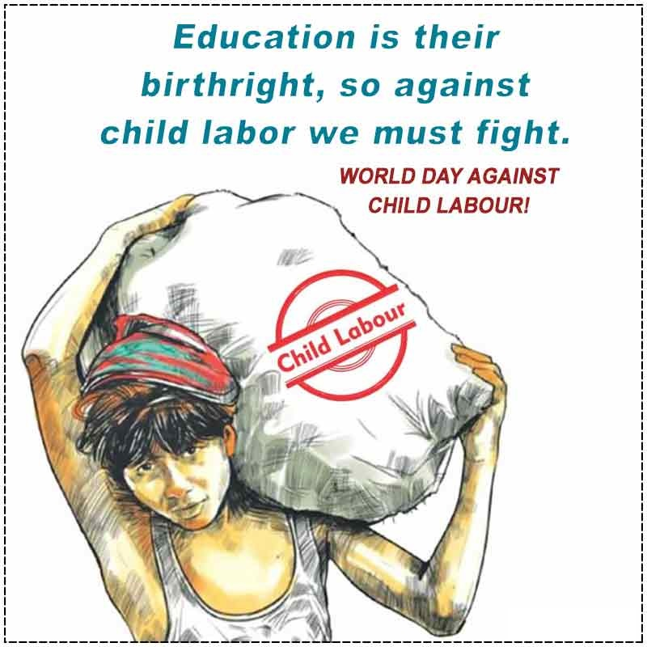
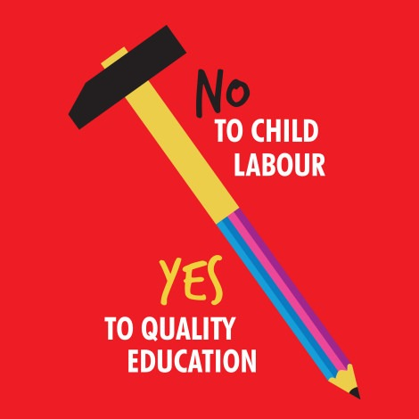
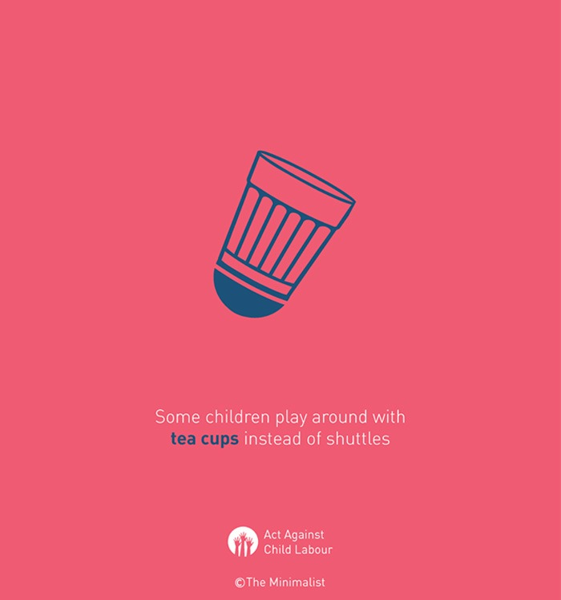
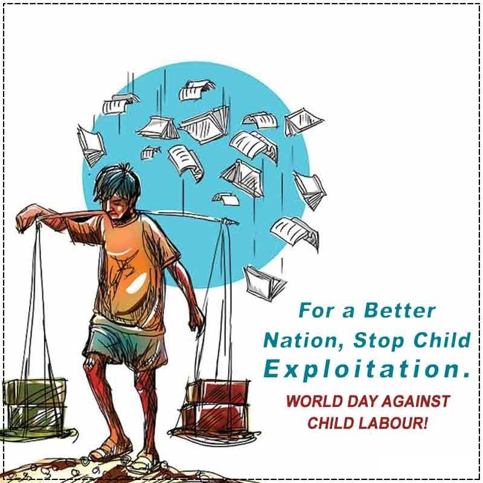
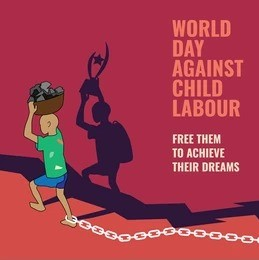
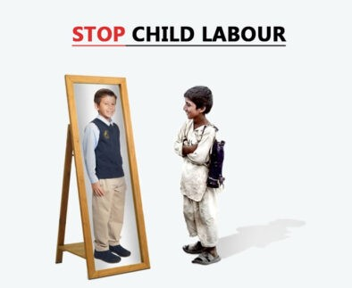
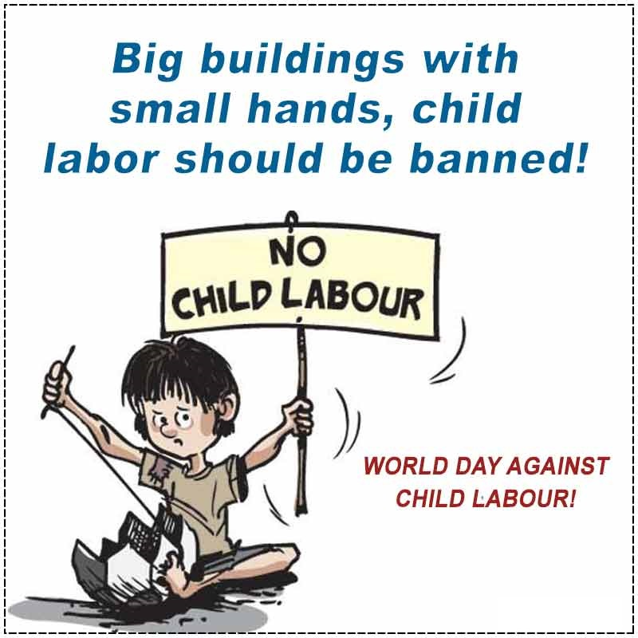
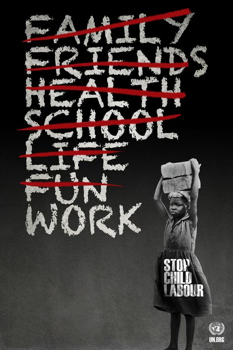
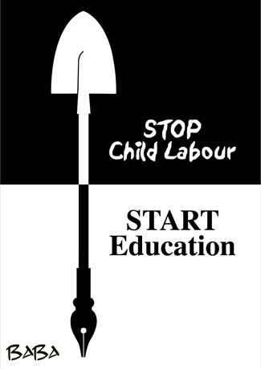

WHAT IS CHILD LABOUR?
Not all work done by children should be classified as child labour that is to be targeted for
elimination. Children’s or adolescents’ participation in work that does not affect their health and
personal development or interfere with their schooling, is generally regarded as being something
positive. This includes activities such as helping their parents around the home, assisting in a
family business or earning pocket money outside school hours and during school holidays. These kinds
of activities contribute to children’s development and to the welfare of their families; they
provide them with skills and experience, and help to prepare them to be productive members of
society during their adult life.
The term “child labour” is often defined as work that deprives children of their childhood, their
potential and their dignity, and that is harmful to physical and mental development
It refers to work that:
1. is mentally, physically, socially or morally dangerous and harmful to children
2. interferes with their schooling
Whether or not particular forms of “work” can be called “child labour” depends on the child’s age,
the type and hours of work performed, the conditions under which it is performed and the objectives
pursued by individual countries. The answer varies from country to country, as well as among sectors
within countries.









CHILD LABOUR STATISTICS IN INDIA
As per Census 2011
The total child population in India in the age group (5-14) years is 259.6 million. Of these, 10.1
million (3.9% of total child population) are working, either as ‘main worker’ or as ‘marginal
worker’. In addition, more than 42.7 million children in India are out of school.
However, the good news is that the incidence of child labour has decreased in India by 2.6 million
between 2001 and 2011. However, the decline was more visible in rural areas, while the number of
child workers has increased in urban areas, indicating the growing demand for child workers in
menial jobs. Child labour has different ramifications in both rural and urban India.
To know more: Click to
Download
CHILD LABOUR INCREASED DURING COVID-19
A study was conducted in 24 districts of the State(Tamil Nadu)
There has been a significant increase in the proportion of working children from 28.2% to 79.6% out
of the 818 children who were surveyed, mainly because of the COVID-19 pandemic and closure of
schools, reveals a study conducted by Campaign Against Child Labour (CACL).
The survey showed that child labour increased to around 280% among the vulnerable communities.
CACL State Convenor R. Karuppusamy released the rapid survey titled ‘COVID-19: Reversing the
Situation of Child Labour’. The study conducted in 24 districts of the State showed that child
labour had rapidly increased in North, South and Eastern districts of the state. The survey was
conducted by interviewing children in the age category 6 to 18 during September and November 2020.
The survey found that children were working in bakery shops, book stalls, two wheeler service
workshops, newspaper distribution, ration shops, vegetable shops and as domestic helpers. Children
were involved in at least 23 different types of occupations in the service sector.
Most of the older children were found to be working for more than eight hours a day.
Nearly 18.6% of the children who were surveyed said that they often face physical, mental and verbal
abuse from their employers. Children, depending upon their age, earned between ₹ 100 and ₹ 400 as
wages per day.
How can we stop child labour in India?
1. Spread awareness
Parental awareness of the evils of child labour can prevent disruption in schooling and pushing of children into labour. Lack of understanding on the part of parents creates situations where traffickers prey upon children and many trafficked children end up in child labour. Aware communities can comprehend and respond to children’s issues much more effectively. Awareness also ensures that communities tap growth, education, employment, and enterprise opportunities and create a socially and economically developed society in which children suffer much less. NGOs use community events, sports, arts and theatre to educate communities about the importance of child rights. NGOs also create income resources, educational resources, and access to information services – all with an aim to help children and their communities march ahead.
2. More stringent laws and effective implementation
Policymaking is essential to long lasting social change, and lobbying for better laws involves demonstrating how change can bring considerable benefit. NGOs research, and showcase findings regarding exploited children, and use case studies to establish how their work benefits children. Driving policy-level change requires relationships with several stakeholders – media, lawmakers, citizens, fellow civil society members, etc. Many cases have been filed under the recent Protection of Children Against Sexual Offences Act (2012) and Immoral Traffic (Prevention) Act, which have successfully translated in increased convictions, demonstrating how legislating can curb child trafficking. NGOs also maintain coordination with district and state level authorities for a vigilant eye on the implementation of pro-child laws.
3. Sending more children to school
India has the world’s largest educational system, yet faces the hurdles of low literacy, due to low enrolment. Organisations like Save the Children execute several initiatives to boost children’s enrolment in schools. The organisation maps out-of-school children and those who are at risk of dropping out and ensures that they enter into the fold of education.
3. Discouraging people to employ children in homes, shops, factories, etc
Save the Children offers immediate aid to victims of child labour, while also working for long-term societal change through policy change. The NGO works to ensure that existing policies are followed through with action. It has rescued 9337 children from child labour, in pan-India ongoing relief and rescue missions. Present in 120 countries, Save the Children focuses on education and a new life of millions of children affected by armed conflict and exploitation. The NGO works with state and national level authorities, including Police departments of states to prevent child exploitation incidence in states such as Punjab, Delhi, Bihar, J&K, Jharkhand, West Bengal and Assam where vulnerability of children is high.
5. Conclusion
Initiatives from civil society have given lakhs of children the means of living dignified life where, they can cherish their childhood. Save the Children has forged powerful relationship with government, national and International bodies to make child rights a “movement”. Fighting child labour requires a multi-pronged push, and there is a need to make this a people’s issue. While officials and government can only institute policies, ignoring everyday child abuse and malnourishment must also be attacked at an individual level, wherever possible – so.